Input File Format: Diameter Axis Bin Grid
Read the specification for a radius bin_grid from a spec file.
- Parameters
-
[in,out] file Spec file. [in,out] bin_grid Radius bin grid.
The diameter bin grid is logarithmic, consisting of 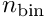 bins with centers  ( 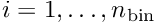) and edges 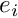 ( 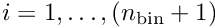) such that 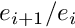 is a constant and 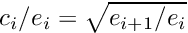. That is, 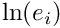 are uniformly spaced and 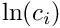 are the arithmetic centers.
( 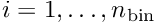) and edges 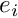 ( 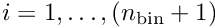) such that 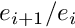 is a constant and 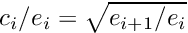. That is, 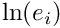 are uniformly spaced and 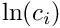 are the arithmetic centers.
The diameter axis bin grid is specified by the parameters:
- n_bin (integer): The number of bins .
- d_min (real, unit m): The left edge of the left-most bin,
 .
. - d_max (real, unit m): The right edge of the right-most bin, 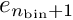.
See also:
- Input File Format: Spec File Format — the input file text format
- Output File Format: Diameter Bin Grid Data — the corresponding output format